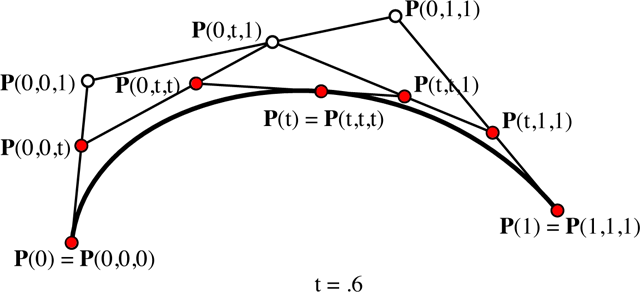
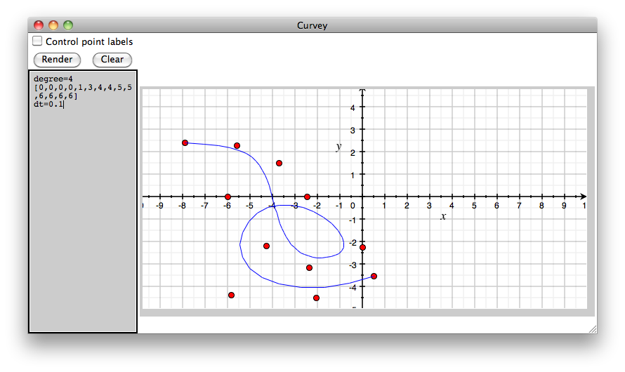

Abstract
Gaining an intuitive understanding for b-splines is difficult without directly seeing the effects of different knot vectors and control point positions.
Curvey allows you to build b-spline curves by specifying the degree of the curve, control points, and the knot vector. This allows the user to see b-spline curves in its most general sense.
Background
Many applications exist for playing around with b-splines, but they are all limited in one to all of the following ways:
- A fixed number of control points.
- Only uniform b-splines.
- No control of knot vector.
- Does not use polar notation.
Curvey uses the polar notation introduced by Lyle Ramshaw.
Polar Notation
This section introduces b-spline curves using the polar notation. We assume that you have a basic understanding of b-spline curves.
A b-spline curve can be defined by a set of control points and a knot vector. Consider the example below:

Here we have a cubic b-spline curve with five control points, (-4,-2), (-2,3), (3,4), (3,-2), (5,-3) and knot vector [0, 0, 0, 1, 2, 2, 2]. The control points are labeled with the control point number and with the polar values. For example, the control point at (3,4) is the 3rd control point with polar values p(0, 1, 2).
More formally, consider a degree n b-spline over the paramater interval [a,b]. We can give polar values to each control point using n consecutive knots from the knot vector

Polar values are symmetric:
And finally, we can calculate the (x,y) position of any polar value c that is between a and b:

More in-depth discussion can be found in [1].
Knot Insertion & de Boor
We can evalute the (x,y) values of a knot t between the paramater space [a,b] by inserting t into the knot vector such that there are n instances of t in the knot vector.
In the example below, we evaluate t = 0.6. We start with the knot vector [0,0,0,1,1,1]. We then insert 0.6 into the knot vector to produce [0,0,0,0.6,1,1,1]. We then calculate new control points p(0,0,0.6), p(0,0.6,1), and p(0.6,1,1). We throw away p(0,0,1) and p(0,1,1). We evaluate the control point positions using the interpolation equation discussed above.
Inserting 0.6 twice more will give us the knot vector [0,0,0,0.6,0.6,0.6,1,1,1]. The final control points are colored red in the figure below.
Curvey
Curvey uses the de Boor algorithm to evaluate the b-spline curves. It uses a simple "walk" by inserting p(u,u,u) every delta as defined by the user.
Setting Up
Download the latest stable version: https://github.com/eshira/curvey/archives/master
If you like living on the edge, you can download the latest git snapshot:
Curvey depends on Python an the Tkinter library, which is included in standard Python distributions. It has been tested on Python 2.6.
Using
To run the GUI version of Curvey, download the source and type:
You can also give Curvey an input file:
Tutorial
This is a short tutorial on how to use the Curvey UI.
We first run Curvey:
Now, hit "Render". You should see something like:
Note the left text panel. It contains:
degree=3 dt=0.2 (1, 3) (2, 4) (6, 3) (5, 1) (2, 1) (0, 2) [0,0,0,1,3,4,4,4]
Curvey has rendered the curve specified.
Press "Clear" to erase the canvas. Now, using your mouse, click on the canvas to create a control point. Hit "Render". You should get an error:
This is because we don't have the right number of control points for the degree and knot vector specified.
Important Curvey has two main methods of inserting control points. The first is through the text box. The second is by clicking on the canvas. When a control point is added via clicking, the text box control points become irrelevant and are ignored. Other information in the text box (e.g. dt, degree) are still used, however. To use the text box control points, you must erase all control points by hitting "Clear".
Add a total of six control points by clicking on points on the canvas. Curvey should automatically render the spline.
You can render labels by clicking on the "Control point labels" checkbox and hitting "Render". The labels show the control point order and the control point's polar values:
Important You can move a control point by right clicking on the control point you want to move. Place it anywhere on the canvas. You can delete a control point by double clicking on the control point.
Curvey was designed to support complex b-spline specifications. Here is an example of a 4 degree spline with 11 control points:
Limitations and Known Bugs
Not working on OS X 10.6 using Python 2.7. There are screwed up dependencies with OS X 10.6 and Tk, so Python 2.7 64bit does not come with Tk. Use Python 2.7 32bit instead:
References
- An Introduction to Polar Forms. (2001) pp. 1-20
- Ramshaw and Digital Equipment Corporation. Systems Research Center. Blossoming: A connect-the-dots approach to splines. (1987)
- B-Spline Curves. (2007) pp. 1-21
- Sederberg. An Introduction to B-Spline Curves. (2005) pp. 1-12
- Andersson and Kvernes. Bezier and B-spline Technology. (2003)